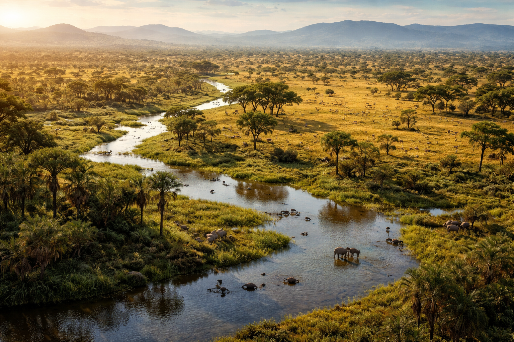
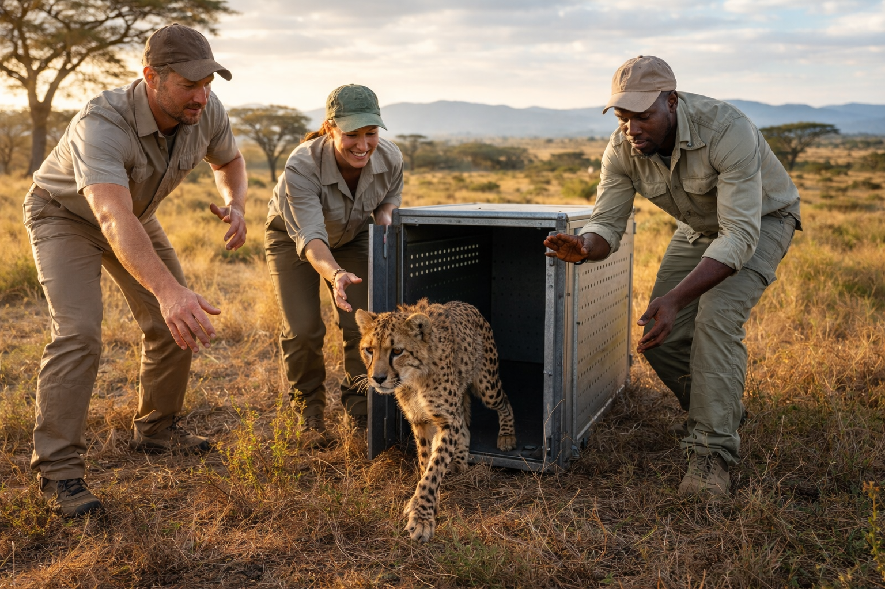

A. Les aires protégées et parcs nationaux
Qu'est-ce qu'une aire protégée ?
Une aire protégée est un endroit où la nature est protégée. Certaines activités humaines comme la chasse, la coupe d’arbres ou la construction sont limitées ou interdites. Le but est de protéger les animaux et les plantes. Il existe plusieurs types : parcs nationaux, réserves naturelles et zones marines protégées.
Un exemple réel : le parc national de Yellowstone (États-Unis)
Créé en 1872, Yellowstone est le premier parc national du monde. Il protège de nombreux animaux comme les ours, les bisons et les loups. Quand les loups ont été réintroduits en 1995, ils ont aidé à rééquilibrer l’écosystème en contrôlant certaines populations d’animaux et en permettant à la nature de se régénérer.
Les limites
- Certains parcs n’ont pas assez de moyens pour surveiller leur territoire.
- Les habitants locaux peuvent perdre l’accès à leurs terres.
- Les animaux peuvent sortir des parcs pendant leurs migrations.
- Le changement climatique peut modifier les habitats.

Source suggérée : Wikimedia Commons ou Unsplash (mots-clés : "national park wildlife aerial")
B. Programmes anti-braconnage et lutte contre le trafic d'espèces
Le braconnage : une grande menace
Le braconnage est la chasse illégale d’animaux sauvages. Le trafic d’animaux est l’un des plus grands trafics criminels au monde et rapporte des milliards de dollars chaque année. Les animaux les plus touchés sont les éléphants (ivoire), les rhinocéros (corne), les pangolins et certains oiseaux ou reptiles exotiques.
Les limites
- La pauvreté pousse certaines personnes à braconner.
- Les réseaux criminels sont difficiles à arrêter.
- La demande pour ces produits existe encore dans certains pays.

Source suggérée : Chaîne YouTube du WWF ou Wikimedia Commons (mot-clé : "cheetah reintroduction")
📚 Sources
- UICN — Liste rouge des espèces menacées (iucnredlist.org)
- IPBES — Rapport mondial sur la biodiversité, 2019 (ipbes.net)
- CITES — Convention sur le commerce international des espèces sauvages (cites.org)
- WWF France — Conservation des espèces (wwf.fr)
- TRAFFIC — Surveillance du commerce de la faune sauvage (traffic.org)
- National Park Service — Yellowstone (nps.gov)